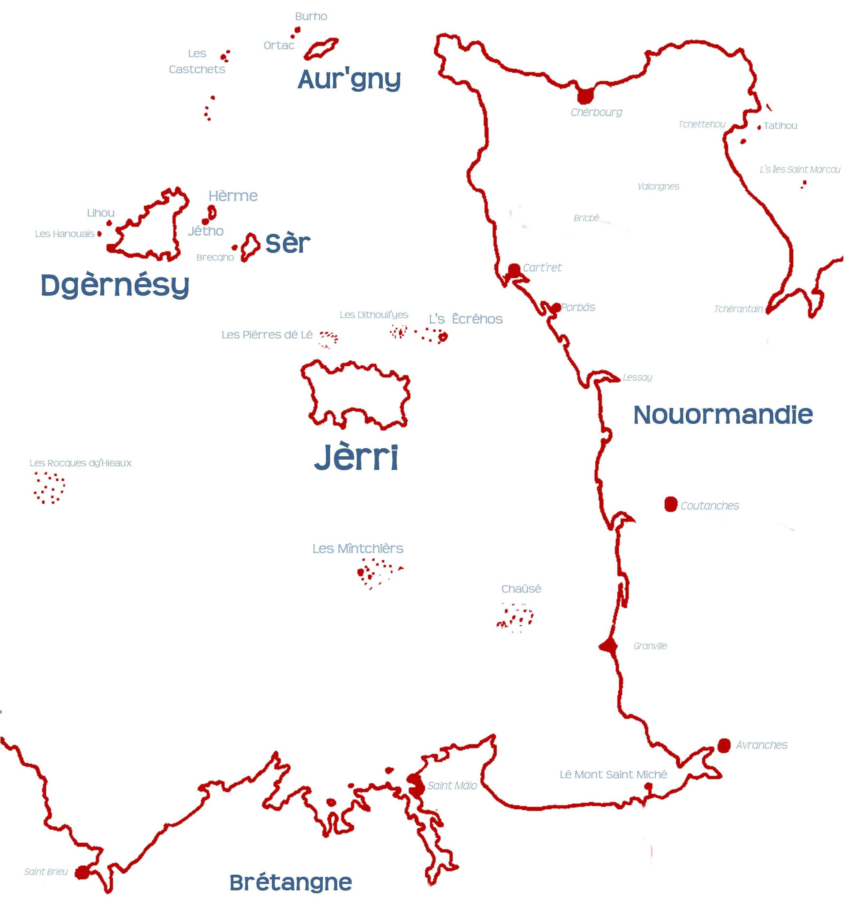

Jèrri est la pus grande (et la pus belle) des Îles d'la Manche, mais ch'est tchuthieux qué not' archipel Nouormand s'trouve dans lé Ch'na. Ch'est en tchi l'nom d'not' pétite dgaîngue d'îles veint du Français, car ieux il' ont l'même nom pouor la mé entre l'Angliétèrre et la France qué pouor la manche d'un fro ou d'eune câsaque.
Tout coumme nou n'sait pon si l'nom Angliais “Channel Islands” fut traduit d'l'Anglio-Nouormand d'l'adminnistrâtion Angliaîche auprès la Contchête, ou si l'adminnistrâtion d's Îles a traduit un nom Angliais en Français officiel tchi d'vînt l'nom en Jèrriais. Assa ch'est tout bein complyitchi!
Un quart du conmèrce mathitînme du monde pâsse l'travèrs du Ch'na, à chein qu'nou dit, sans pâler d'touos les batchieaux à vaituthes tchi crouaîsent lé Ch'na châque jour entre Dovre et Calais; Porchémue et Caën, Chèrbourg et Lé Hâvre; Poole et Ouêmue et St-Mâlo; et Pliémue et Roscoff.
Auve touos ches navithes et les mathées et les rotchièrs l'tou des côtes j'sommes chanceurs qu'i' n'y'ait pon bein d'batchieaux d'naûfragis. Mais parfais y'en a, par exempl'ye lé fanmeux Amoco Cadiz y'a d's années, et né v'là pouortchi qu'i' y'a des veues. J'aimons bein not' veue d'La Corbiéthe (sustout sus des billes dé chîn louis!), mais les veues des Castchets, dé Gatteville dans la Grand'-Tèrre (tch'est la pus haute en France) et d'Ouessant ont sauvé bein d'vies ès pouôrres navidgants avaû l's années.
Mais d'pis dgiêx ans nou-s'a peu viagi par c'mîn d'fé par la Tonnelle souos lé Ch'na. Pouor les cheins tch'ont l'ma d'mé ch'est sans doute un amendement.
Nos Îles d'la Manche né sont pon les seules îles du Ch'na. La pus grande est l'Île dé Witte, mais y'a étout nos vaîsîns d'Chausé, la Seurlîngue et d's îles lé long d'la côte Brétonne.
Et chenna, ch'est lé Ch'na!
Geraint Jennings
Viyiz étout: